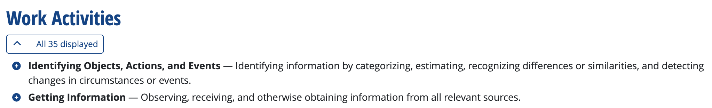
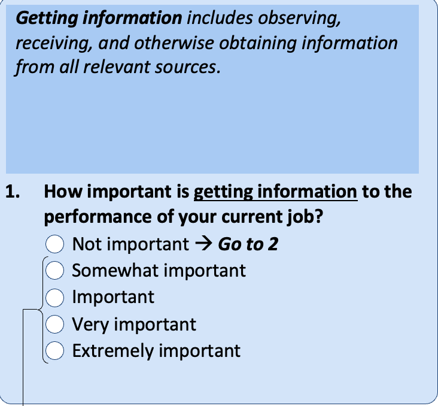
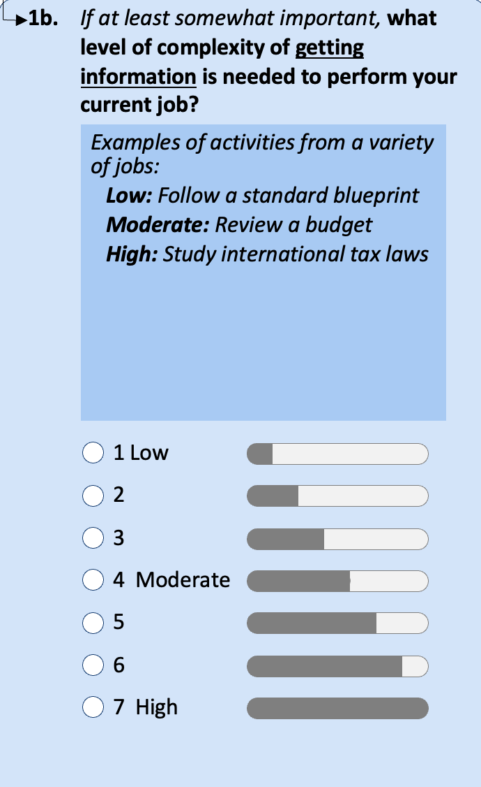
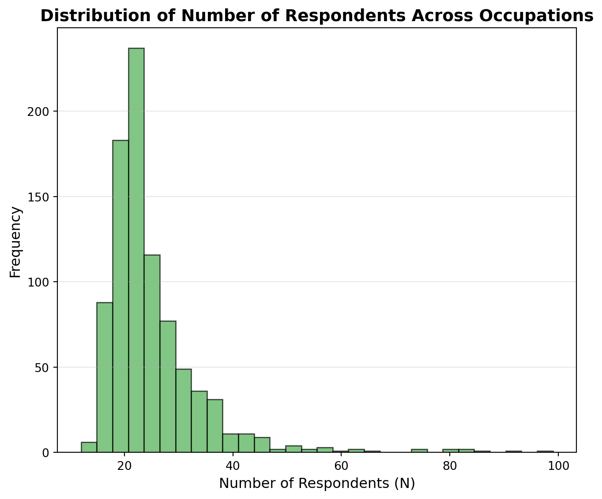

| O*NET-SOC Code | Element ID | Element Name |
| Scale ID | Data Value | N |
| Standard Error | Lower CI Bound | Upper CI Bound |
| Recommend Suppress | Not Relevant | Date |
| Domain Source |
12 O*NET
12.1 Brief Introduction
The goal of O*NET (Occupational Information Network) is to provide comprehensive information about different occupations in the US. It replaced the Dictionary of Occupational Titles which was paper-based. It includes information on the tasks that individuals perform in occupations, the skills one needs to perform the occupation, details on the work activities performed, among other information.
In order to get this information on occupations, O*NET generally sends survey to workers who are current performing the occupation (referred to as incumbents). They are asked various questions about different tasks and skills and asked to rate them on a scale from 1 (not important) to 5 (very important). Some questions are given to all occupations while others are specific. For example, when asking about tasks, it would be unreasonable to ask about certain tasks for certain occupations. Therefore, experts use prior information (just as information from the Dictionary of Occcuapational Titles) to come up with a set of tasks that would be reasonable to ask about.
12.2 Interacting with O*NET
How one interacts with O*NET likely depends on the user. For example, a job seeker will generally use O*NET online. This is a website that allows users to search for specific occupations. The information will then be clearly presented. Researchers, generally, will tend to prefer to use the raw data downloads. This will allow one to perform statistical analysis on the data, while considering a wide array of occupations at once.
The raw data, however, can be quite complicated. Unlike when we studied the CPS or ACS, we don’t get one table of information. Instead O*NET comes as a large list of files that can be merged together depending on the analysis that you are trying to perform. We are going to go through the structure of a few of these in this chapter, but there is much more to learn about the O*NET.
12.3 Work Activities
We are going to start quite broad. As we will show later, O*NET will allow us to drill down much more narrowly to get into exactyl what a person is doing in an occupation. But first we will start with relatively broad Work Activities.
As a case study to begin, we are going to look at Security Guards. If you go to O*NET Online and search for security guards, you will find under the tab Work Activities, a number of different activities that are performed by Security Guards. Below I have pasted the two work activities that appeared highest up in the list.

We are going to focus on the second work activity Getting Information. O*NET also makes available the questionnaire that it sends to workers. Let’s go look at exactly how this question is asked.

When we turn to the raw data, we will see that this information will be coded as a numeric variable. If you select not important, than that will be represented by a 1. If you select 5 that will be treated as extremely important. This format for scoring is extremely common in survey questions and is often referred to as a Likert scale (named after its inventor Rensis Likert).
Now, if you choose anything besides “Not Important”, you will then be asked another question.

This is referred to as the Level question. This is also coded as a numeric variable in the raw data, with higher numbers indicating a higher level of complexity. So when we go to the raw data next, we should keep these questions in mind. Unlike the online data, the raw data files will allow us to see exactly how individuals answered these questions.
The information below comes from a file named “Work Activities”. The way I downloaded the data is through going to the O*NET database website here: https://www.onetcenter.org/database.html. This website allows you to donwload the entire O*NET databse. Like mentioned before, this is a lot of files. You may not need all of these files. You can download individuals files by going to O*NET online and searching O*NET data tab at the top of the site.
Let’s get a list of the different variables in the Work Activities file.
We are going to discuss a few of these. The O*NET-SOC Code is goint to be how we identify occupations in the data. For example, the O*NET-SOC code for security guards is 33-9032.00. Each row in the data is a different question. The Element ID tells us which question we are referencing and Element Name gives us a description of that question. For example, if we look at the first element of Element ID an Element Name in the dataset we get:
Element ID: 4.A.1.a.1
Element Name: Getting InformationSo the code associated with our Getting Information question is 4.A.1.a.1. However, there are actually two Getting Information questions. One is about the importance of getting information. The other is about the level of complexity of getting information. These questions actually have the same Element ID, but whether you are considering the importance or level question is given by the variable Scaled ID. This variable is either equal to “IM” for the importance questions or “LV” for the level questions. Let’s get a frequency table of IM vs. LV in the dataset.
Scale ID
IM 36654
LV 36654
Name: count, dtype: int64So in total we have 36,654 rows of data that correspond to importance questions, and 36,654 rows of data that correspond to level questions. Before we continue, let’s see how many unique occupations there are in the data:
| Metric | Count |
| Number of Unique Occupations | 894 |
Now, this data structure isn’t quite as straightforward as the previous datasets we covered, where the unit-of-observation was a person. In this dataset, the unit-of-observation is a question for a specific occupation. The variables O*NET-SOC Code, Element ID and Scale ID together make up the unit-of-observation. Data Value is going to be our key variable of interest. This tells us how people are answering the Work Activities Question. But to understand how to use it, let’s focus on a single question first. Let’s restrict our data to the importance version of the Getting Information question. In code, we are going to restrict to rows of the data in which
Element ID == "4.A.1.a.1" & Scale ID == "IM"
How you will restrict to these individuals depends a bit on what program you are using. Below we include Python, Stata and R code snippets that would perform this operation.
Python:
wa_filtered = wa[(wa['Element ID'] == '4.A.1.a.1') & (wa['Scale ID'] == 'IM')]Stata:
keep if ElementID == "4.A.1.a.1" & ScaleID == "IM"R:
wa_filtered <- wa %>%
filter(`Element ID` == "4.A.1.a.1" & `Scale ID` == "IM")You will note that sometimes the exact names of the variables have changed a bit. Stata does not allow names to have spaces (generally it is a good idea not to have spaces in variables names. Spaces make the code unnecessarily more complicated).
Now that we’ve restricted to our question of interest, let’s make a summary statistics table that shows some key percentiles of the Data Value variable (i.e. the answer to how important getting information is for the job).
| Statistic | Value |
| Mean | 4.22 |
| 10th Percentile | 3.71 |
| 75th Percentile | 4.48 |
| Number of Observations | 894 |
Reminder, this question asked on a scale of 1 to 5, how important it is to get information in this job. As you can see the average across all occupation is 4.22, which indicates getting information on average is very important in many jobs. Even the 10th percentile, getting information is around 3.7, indicating it is still close to very important.
One question we should ask ourselves is: how many people are actually answering this question. This is given by the variable N in the dataset. Each value tells us how many incumbent workers responded to this question. Let’s create a histogram of N across occupations so we can better understand the source of our information.

So the first thing to note is that there are not a tremendous number of respondents per occupation. Most occupations have around 20. This is why O*NET also provides standard errors and confidence bounds for questions. While we will not discuss these statistics in the class, they are ways to understand the uncertainty around an answer. For example, if an occupation reports a 4.5, but there is a large standard error on this estimate, then that implies we are relatively less certain about the true value for this question (where the true vale would be given by a very large sample size of individuals in that occupation).
Now, let’s go back to our case study of security guards. Let’s create a dataset that restricts only to the security guard SOC code so that we can understand this occupation in more detail. Below, we should the Work Activities that were rated most important for Security Guards.
| O*NET-SOC Code | Element Name | Data Value | N |
| 33-9032.00 | Identifying Objects, Actions, and Events | 4.76 | 16 |
| 33-9032.00 | Getting Information | 4.58 | 16 |
| 33-9032.00 | Communicating with Supervisors, Peers, or Subordinates | 4.54 | 16 |
| 33-9032.00 | Documenting/Recording Information | 4.48 | 16 |
| 33-9032.00 | Establishing and Maintaining Interpersonal Relationships | 4.45 | 16 |
One small aside to note here. You will notice that two of the top 5 work activities involves information. For a security guard, this is likely a physical task. They have to go to a place to record the information. Now, you may have seen headlines that reports X percent of jobs can be done by AI. Getting information is a task that AI can do very well. But it is fundamentally different than the type of information that security guards retrieve and document. In other words, within a given task or work activity, there is likely a lot of variation in exactly what that means. However, methods that don’t take into account the context of the occupation may falsely label security guards as likely to be replaced by AI.
What might also be informative is to see the work activities that security guards deem the least important in their jobs.
| O*NET-SOC Code | Element Name | Data Value | N |
| 33-9032.00 | Repairing and Maintaining Mechanical Equipment | 2.07 | 15 |
| 33-9032.00 | Repairing and Maintaining Electronic Equipment | 2.15 | 14 |
| 33-9032.00 | Drafting, Laying Out, and Specifying Technical Devices, Parts, and Equipment | 2.42 | 16 |
| 33-9032.00 | Handling and Moving Objects | 2.61 | 16 |
| 33-9032.00 | Controlling Machines and Processes | 2.61 | 16 |
Now, this only scratches the surface of what O*NET provides, but it gives us a starting point. If we are interested in how future technology may impact security guards, we can think about the work activities they perform. How do we think these work activities will be replaced (or augmented) by technology in the future.